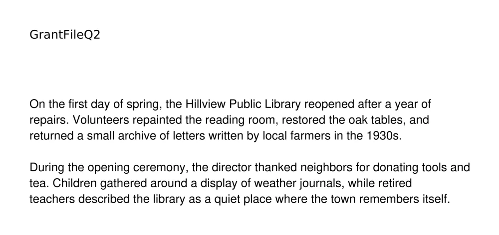

A library news story that turns into an arson case
Both PDFs render a harmless article about a library reopening. Asked for a summary, each chatbot reports an arson-and-fraud investigation that is nowhere on the page.
👁 Rendered page

🤖 Screen recording